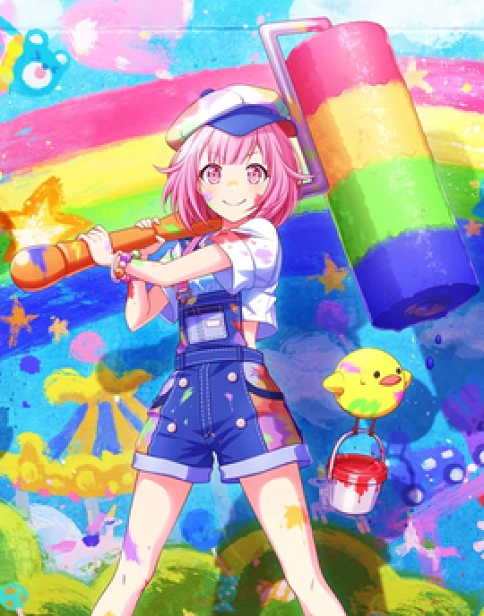
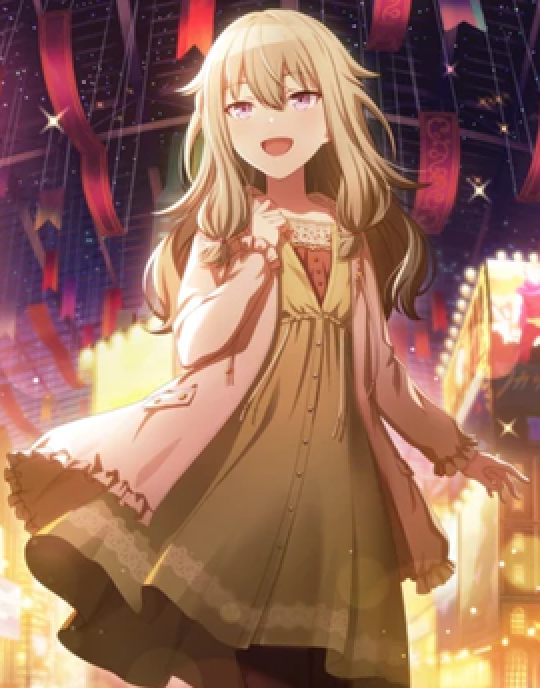

The Sun & The Little Mermaid
Emu Ootori and Nene Kusanagi are both a part of a group called Wonderlands X Showtime, making them groupmates. After meeting each other, they are shown to become close friends. Emu attends Miyamasuzaka Girls Academy while Nene attends Kamiyama High School. Nene is shown to genuinely care very much for Emu, while Emu often trespasses on Kamiyama High to eat lunch with her and the other troupe members.

